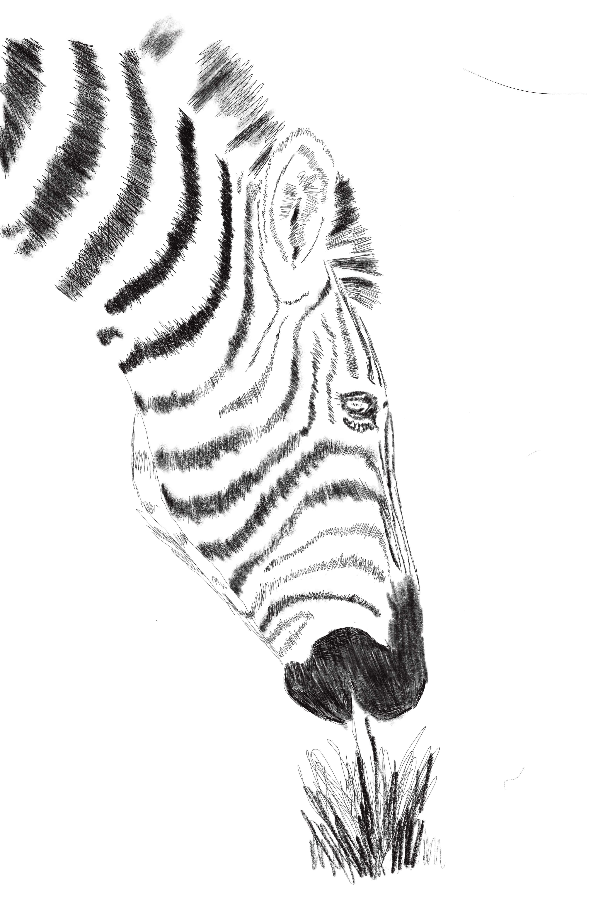
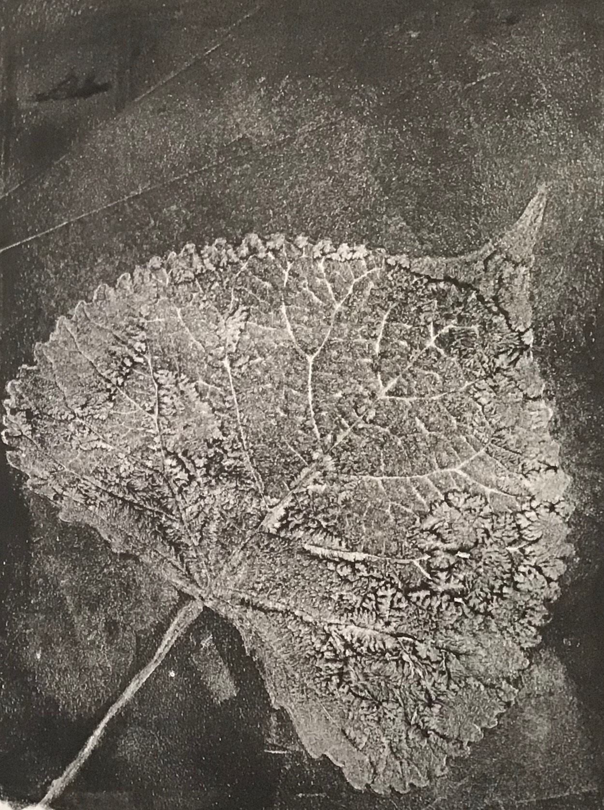

Who is she?
Who is she?
A Korean-born American with an Irish last name and French surname, a love of the German language, and an inability to be defined by any one definition, Jill’s life could be classified as anything but simple. While attending Northwest University in Seattle for her degree in Education, she met and married her husband. They eventually moved back to her husband’s hometown in Billings, Montana to raise her four kids.
Professional Works
Proven by her Master's in Education, Jill has always had the ability to reach people through words. She has worked as a business consultant, public speaker, writer, minister, and churchplanter in the Northwest Pacific for more than 20 years.
Writing
Jill's writing has granted her opportunities as a writer for the local Yellowstone Valley Woman Magazine and as a writer and editor for the nationally published Covenant Companion. More recently, she has been writing a weekly blog about her journey with mental health and working on her first drafts for a book of her own memoir.
Awards:
2017 Best of Church Press Awards
Honorable Mention for Biographical Profile
Current Writings:
Yellowstone Valley Woman Magazine
Covenant Companion
To see David Washington standing today in front of his former dope house in Chicago’s Roseland neighborhood, it is difficult to imagine the gangs and violence of his teen years. Yet the clues to his past are still there. Washington, a Covenant pastor ...
I live in hiking and backpacking country. In my mind I am a hiker. I am cool and sporty like the people in the Patagonia ads. Lean, athletic and tan I embark on outdoor adventures, my happy face tanned, barely glistening with sweat. My legs are capable ...

Photography
Self-taught later in life, Jill’s ambition has led her to become a skilled and sought-after photographer in her area. She has shot weddings, events, and singular photo shoots at venues all over her home state.



Art
While she has always been inclined towards crafts and hobbies such as quilting and knitting, Jill has shown great talent in other mediums. Her favorites include watercolor and ink.

Back to top